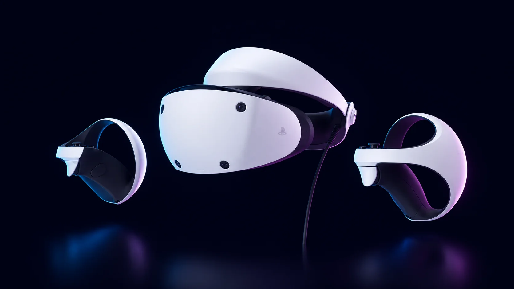

Best VR for PS5: which headsets actually work in 2026

For a PS5, the PlayStation VR2. It's the only headset Sony supports on the console, and the only one you can still set up from scratch: a Meta Quest doesn't connect to a PlayStation. Whether it's worth it in 2026 depends on two things: whether you already own the PS5, and how much a small, slow-growing game library bothers you.
Which headsets work with a PS5
| Works with a PS5? | What to know | |
|---|---|---|
| PSVR2 | Yes | One USB-C cable to the console. Plays PSVR2 games, not the original PS VR's. |
| Original PS VR | Only for PS4 VR games | Needs a camera adapter Sony gave away and stopped offering in November 2024. Without one, there's no official way. |
| Meta Quest 3 or 3S | No | Standalone: plays its own games, or PC VR with a gaming PC. |
| PC VR headsets | No | They need a gaming PC. |
What it costs now
Sony's US list price for the PSVR2 is $399, and it dropped to $300 in Sony's summer sale. The problem this year is stock: in September 2026 it was out of stock on Sony's US store, and finding it new at list price took some hunting. Used ones sell for less, but check the lenses and the cable before paying.
If you don't own a PS5 yet, add the console. Since April 2026 the Digital Edition costs $599.99 and the disc version $649.99, so getting into console VR from zero costs about $1,000. A Quest 3S costs $349.99 and needs nothing else.
What the PSVR2 does better
The image. Its OLED HDR displays, at 2000×2040 per eye, show real blacks and contrast that the LCD panels in a Quest can't match. It tracks your eyes, so the PS5 renders full detail only where you're looking. The Sense controllers have the DualSense's adaptive triggers and haptics, and the headset itself vibrates. For seated, cinematic games like Gran Turismo 7 or Resident Evil Village, nothing in its price range looks as good.
The weak spot: games and Sony's support
The library is much smaller than the Quest's, and Sony has published almost nothing for it since launch. 2026 brought more losses: Beat Saber stopped getting new content on PlayStation and switched off its multiplayer there in January, and Firewall Ultra, one of Sony's two PSVR2 exclusives, was delisted and went offline for good in September.
New games keep coming, mostly from other studios, and there are real reasons to own one: Gran Turismo 7, Resident Evil 4 and Village, Horizon Call of the Mountain, No Man's Sky, Metro Awakening, Microsoft Flight Simulator, Myst and Riven. Buy it for the games that exist today, not for what Sony might release.
The PC adapter
Sony sells an adapter that connects the PSVR2 to a gaming PC to play SteamVR games such as Half-Life: Alyx. On PC you lose the eye tracking, the HDR, the headset vibration and the adaptive triggers, which are what make it special. It's a separate purchase.
Which one to buy
- You already own a PS5 and want seated VR that looks great: the PSVR2, ideally on sale, knowing its library grows slowly.
- You don't own a PS5, or you care more about a big library, no cable or mixed reality: a Quest. Our Quest 3 vs 3S guide explains which one.
Where to buy
Answer 7 quick questions and get a personalized match in 60 seconds.
Take the VR Finder quiz →Some links on vr.ar are affiliate links: if you buy through them we may earn a commission at no extra cost to you, which helps keep vr.ar free. Links to Amazon are plain searches and earn us nothing. Prices and specifications are subject to change. See our Privacy Policy.